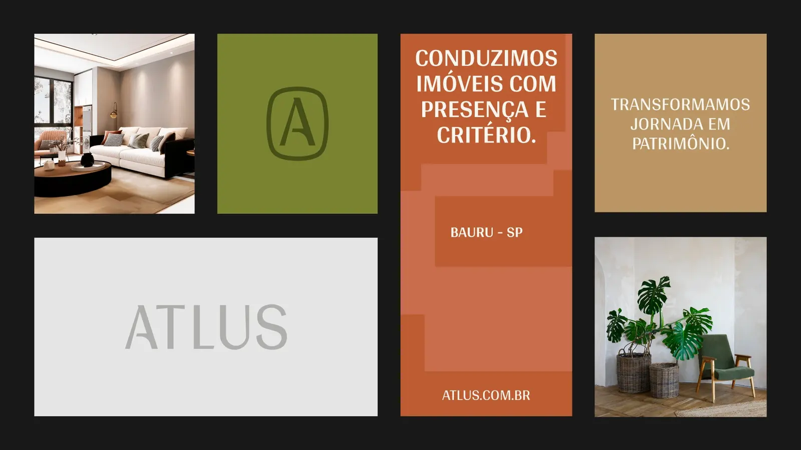
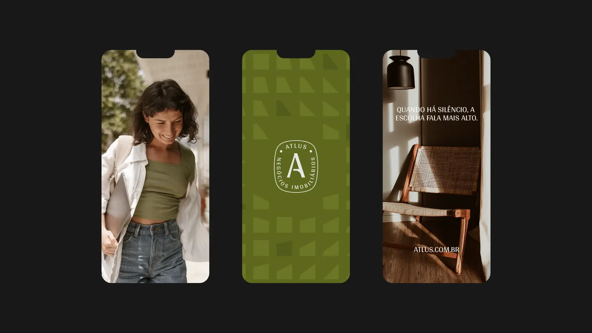
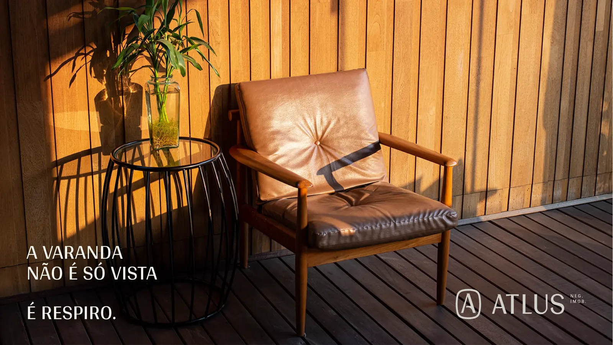
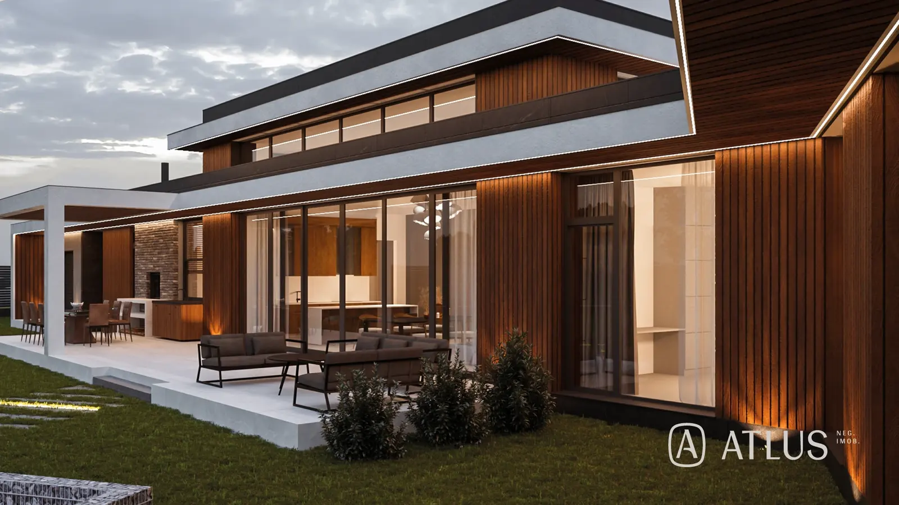
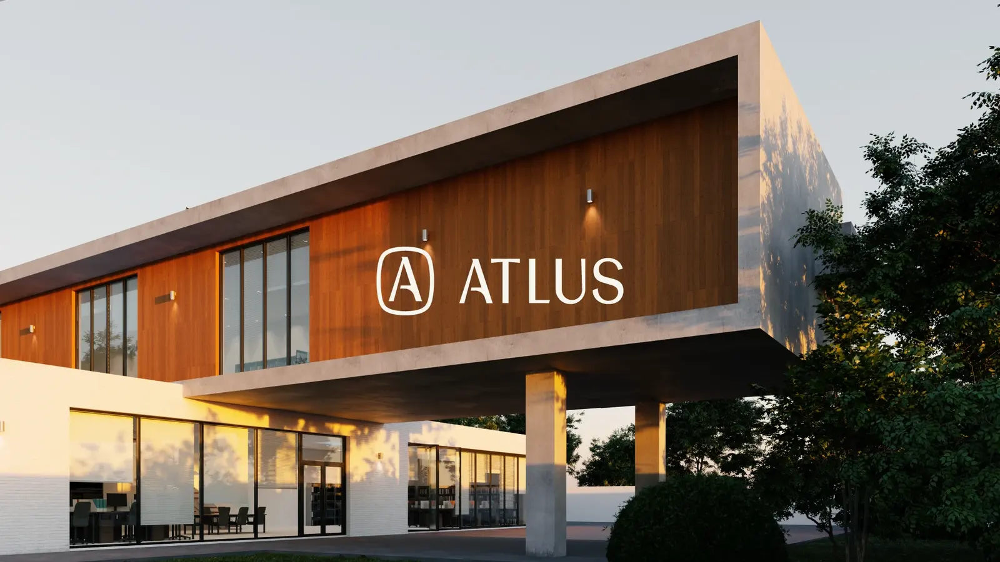
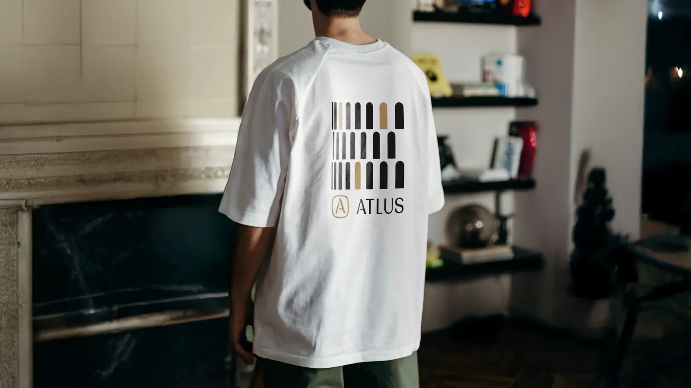

Mercado imobiliário
Atlus

Inspirada em Atlas, o titã que sustentava o céu, a Atlus nasce como uma imobiliária que troca a pressa pela orientação. O mito foi escolhido para traduzir o que a marca quer ser: firmeza, responsabilidade e uma autoridade silenciosa que inspira confiança.
Num mercado que normalizou a pressa e trata pessoas como leads, a identidade se constrói sobre Presença e Critério. O sistema é minimalista, sofisticado e de tom técnico, com um símbolo que remete a pilares estruturais e uma paleta de materiais nobres, como o mármore e o bronze.
Uma marca que não empurra ninguém para a decisão. Ela acompanha cada escolha com propósito.







